Mattermost Deck
Mattermost Web の右側に、メンション、チャンネル、DM、検索結果などをペインとして並べます。
ログイン、投稿、編集、スレッド操作は Mattermost 本体で行います。
| Browser | Google Chrome 120 以降 |
|---|---|
| UI | 9 言語 |
| 保存先 | このブラウザー内のみ |
| ライセンス | MIT |
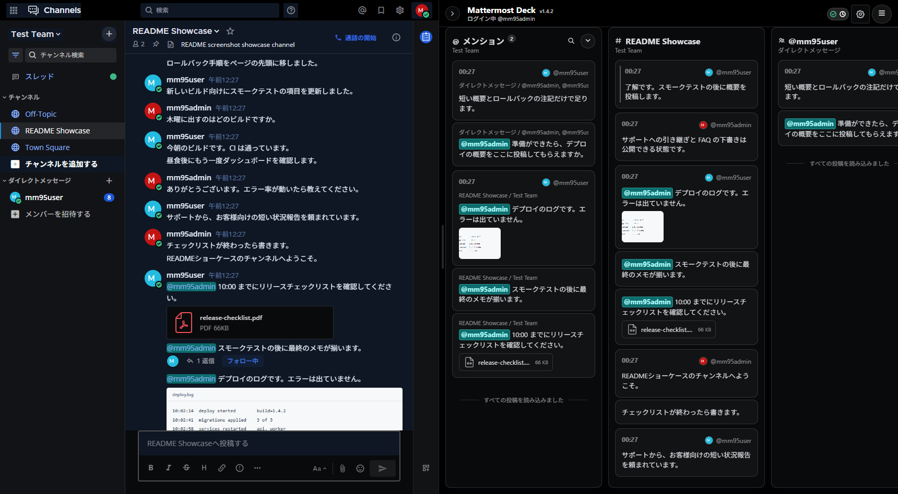
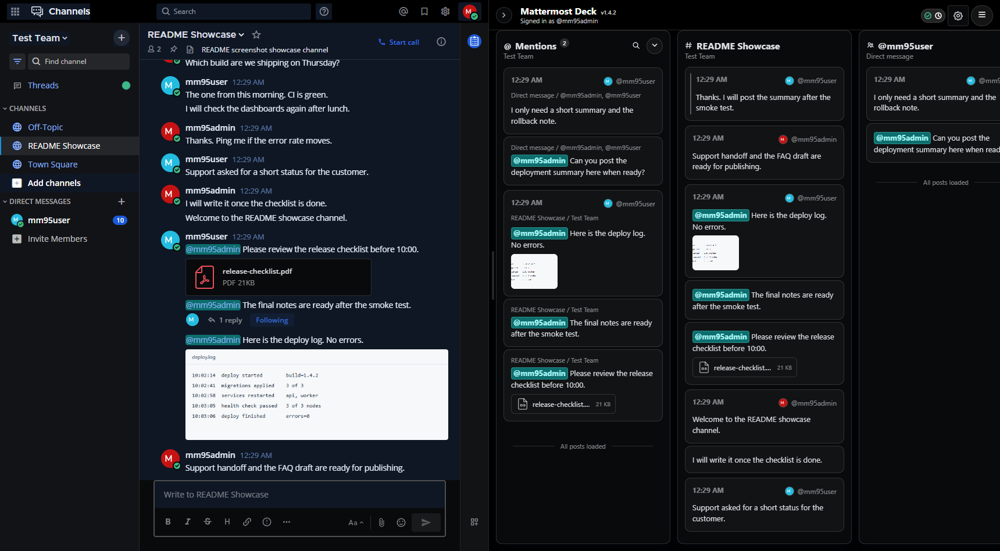
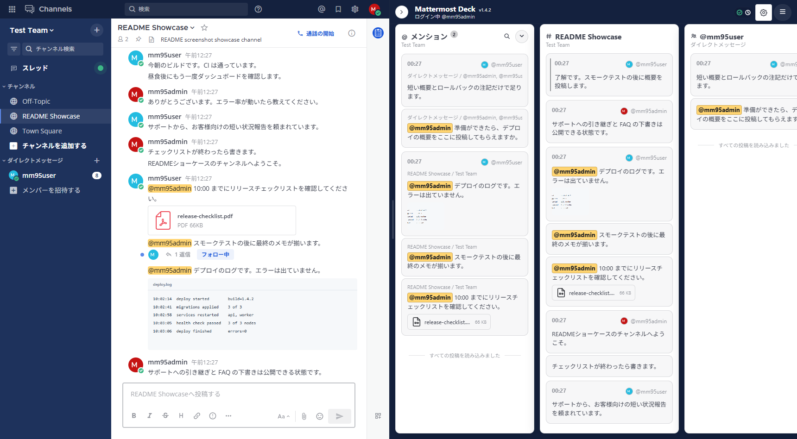
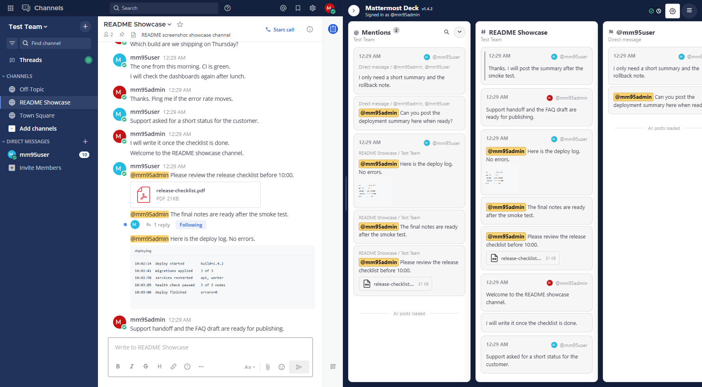
画面の占め方
Mattermost の本文幅は変わらず、右ペイン（スレッドや検索）を開いた分だけ Deck が狭くなります。Deck の幅が 280px を下回ると 52px のレールに折り畳み、右ペインを閉じると元の幅とスクロール位置に戻ります。各ペインの幅は 200〜800px で、右端のドラッグで変えます。

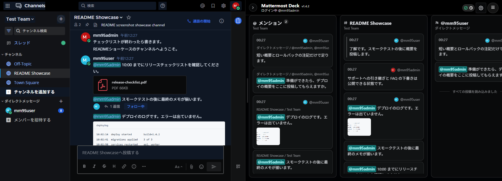


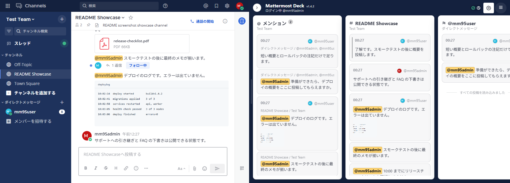


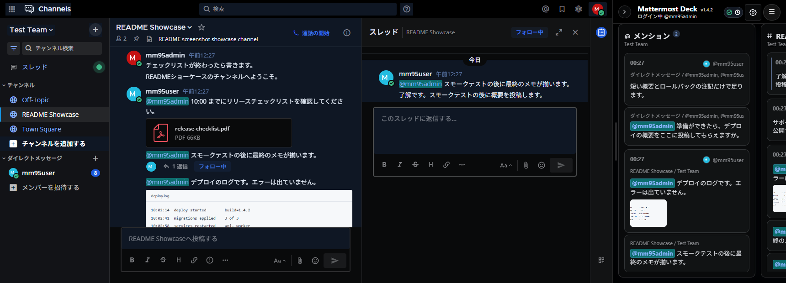

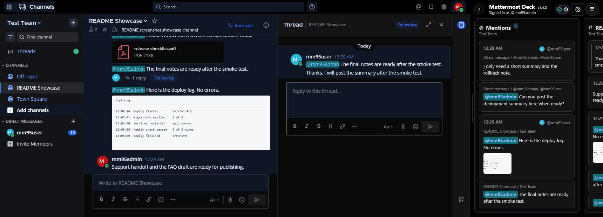

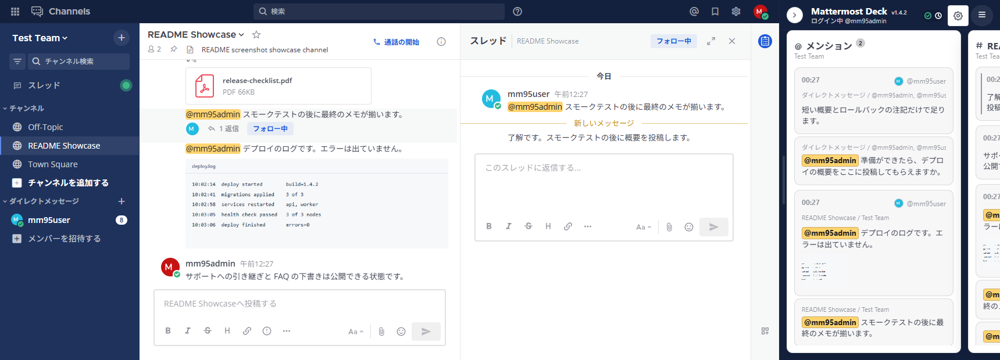

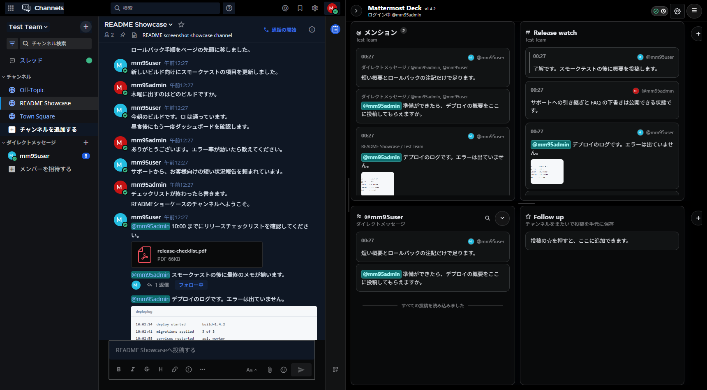
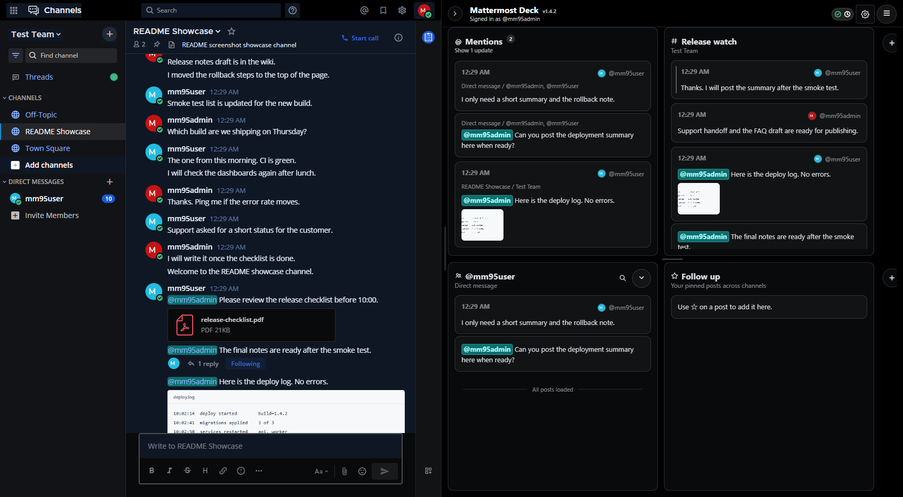
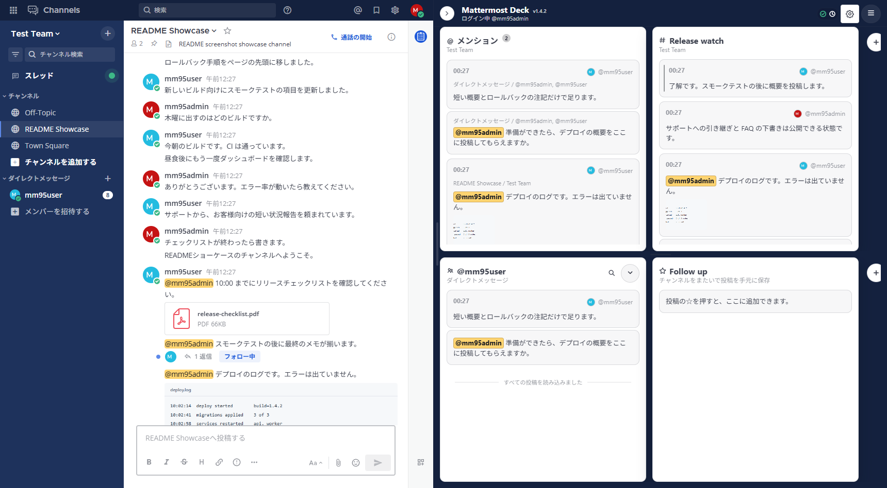
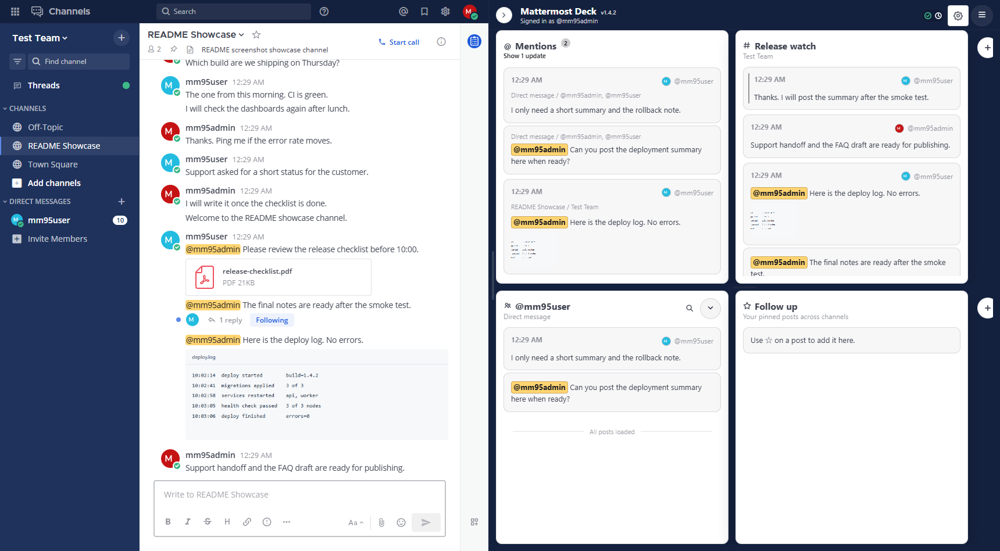
上下 2 段
| 切替 | Views で 1 段／2 段を切り替えます。初回のみ上部の「2 段を試す」から切り替えられます。 |
| スクロール | 段ごとに独立して横スクロールします。 |
| 高さ | 境界のドラッグで 20〜80%。ダブルクリックか Home で均等、↑ ↓ で微調整。Drag the divider, 20–80%. Double-click or Home to even out; ↑ ↓ adjust. |
| 並び替え | タイトルのドラッグ（段をまたげます）。Esc で取り消し。Drag a title, across rows too. Esc cancels. |
| 別名 | タイトルをダブルクリック／右クリック／F2。空で保存すると元の名前に戻ります。Double-click, right-click, or F2 on the title. Blank restores the name. |
| 保存 | Views に保存、JSON で書き出し・読み込み。段の高さ配分も含みます。 |
ペインの種類＋ から追加。同じ種類を複数並べられます
| メンションmentions | 参加している全チーム・全チャンネルのメンションを 1 つの一覧に。カスタムメンションキー、@all @channel @here、グループメンション、DM／GM、CRT 有効時のスレッド返信を Mattermost の設定どおりに扱います。自分のユーザー名は強調表示されます。画像の添付はサムネイル（設定で切り替え可）、それ以外のファイルはファイル名とサイズで表示します。Mentions from every joined team and channel in one list: custom keys, @all @channel @here, group mentions, DMs/GMs, and thread replies under CRT, resolved per your Mattermost settings. Your own username is highlighted. Image attachments show as thumbnails (switchable in settings); other files show as a name and size. |
| 要確認mentions / review | 「確認済みにする」を押すまで消えない一覧。Mattermost 側で既読にしても、投稿を開いても消えません。直後 5 秒は取り消せ、履歴から戻せます。 |
| チャンネル／DMchannelWatch, dmWatch | 特定のチャンネル、DM、グループメッセージを個別のペインとして開いたままにします。 |
| 検索search | 検索結果をペインとして固定します。 |
| お気に入りfavorites | 投稿の ☆ で登録する個人用リスト。Mattermost の保存済み投稿とは別で、サーバーとアカウントごとに最大 100 件。 |
| 保存済みsaved | Mattermost の保存済み投稿を一覧にします。 |
| Diagnosticsdiagnostics | 接続状態、ポーリング、WebSocket の再接続、API の平均遅延とエラー率、描画時間、直近の同期ログ。トレースの JSONL 書き出しは設定画面から行います。 |
設定の手順
インストールすると設定画面が開きます。
サーバーURLを入力して「保存」を押します。初回は、そのサーバーへのアクセス許可を Chrome が求めるので承認します。リモートのサーバーは HTTPS が必要です（HTTP は localhost などの開発用のみ）。サブパス付きの Site URL も使えます。


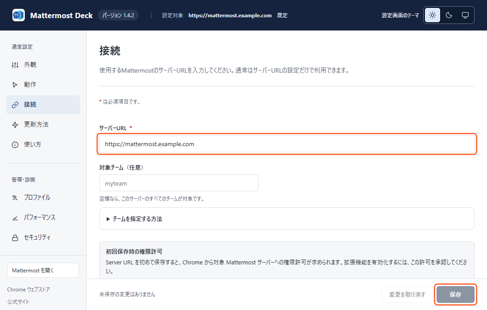

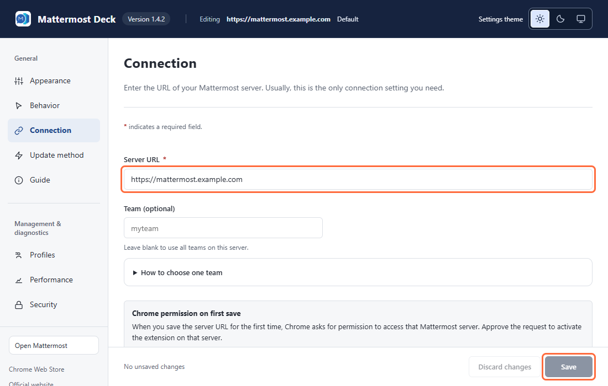
「対象チーム（任意）」を空欄にすると、サーバー上の全チームが対象です。1 つに絞るときは、表示名ではなく URL の名前（team slug）を入れます。例: https://mattermost.example.com/myteam/channels/town-square の myteam。
サーバーを開くと右側に Deck が出ます。「＋」からペインを追加します。
既定は定期更新です（間隔は 15 秒以上）。リアルタイム更新が必要なときだけ、「リアルタイム更新を設定」に PAT を入力します。PAT は Mattermost の User Settings > Security > Personal Access Tokens で作成します（管理者側で有効化が必要）。保存方法は「セッションのみ」が既定です。リスクは「PAT の扱い」を参照してください。

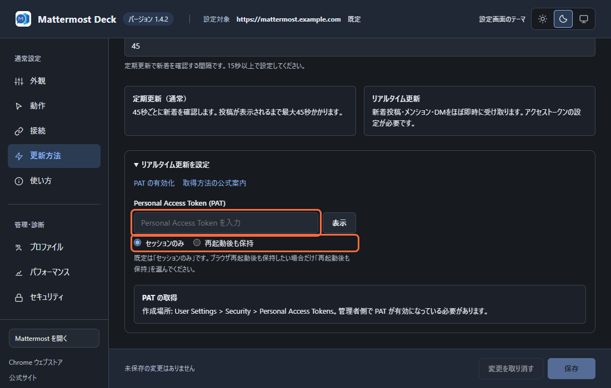


外観: テーマ、言語、文字サイズ、ペイン幅、コンパクト表示、画像プレビューなど。動作: 投稿クリック時の動作、ハイライトするキーワードなど。
用途ごとに設定を分けたいとき、または複数のサーバーに参加していて設定をサーバーごとに分けたいときに使います。接続が動くことを確認してから作成します。
通信と保存
| REST | ブラウザーで開いている Mattermost のセッションを使います。Deck 用の追加ログインはありません。 |
| WebSocket | PAT を設定したときだけ有効です。未設定なら定期取得で更新します。 |
| PAT | 既定は chrome.storage.session で、ブラウザーを閉じると消えます。再起動後も保持するかは選べます。Kept in chrome.storage.session by default and cleared when the browser session ends. Persisting across restarts is optional. |
| 送信先 | 設定した Mattermost サーバーのみ。第三者の analytics や広告はありません。 |
| 保存先 | 設定、レイアウト、お気に入り、確認状態などは、このブラウザー内にサーバーとアカウントごとに保存します。 |
PAT の扱い
利点PAT を設定すると WebSocket で更新を受け取り、リアルタイムに表示します。未設定でも定期更新で使えます。
リスクPAT は、発行したアカウントの権限で API を呼べる認証情報です。漏えいすると、そのアカウントの権限で操作される可能性があります。利便性とリスクを比べて判断してください。
暗号化保存時にクライアント側で暗号化しますが、鍵も同じブラウザー内にあります。平文で残さないための最低限の措置で、安全を保証するものではありません。拡張機能のローカル保存領域は Chrome が暗号化しません。
運用保存方法は既定の「セッションのみ」を推奨します。専用の低権限トークンを使い、不要になったら Mattermost で削除します。
操作のヒント
- タイトルのドラッグ中に Esc で並び替えを取り消します。投稿も検索条件もスクロール位置もそのままです。Esc while dragging a title cancels the move. Posts, filters, and scroll positions stay put.
- ペイン右端のダブルクリック、または Home で既定幅に戻します。← → でも調整できます。Double-click a pane's right edge or press Home for the default width. ← → adjust it.
- 虫眼鏡で、読み込み済みの本文と投稿者を絞り込めます。追加の通信はありません。
- 使い分けは Views に保存。端末を移すときは JSON で書き出します。
- コンパクト表示では
時刻 投稿者: 本文の 1 行になります。Compact mode shows one line:time author: message. - 投稿の「…」から、その投稿者や会話を非表示にできます。取得や既読には影響しません。
FAQ
Mattermost の代わりに使うものですか
いいえ。ログイン、投稿、編集、スレッド操作は Mattermost 本体のままです。
PAT は必要ですか
必要ありません。未設定なら定期取得で更新します。設定するとリアルタイム更新になりますが、トークンの管理が必要になります。「PAT の扱い」を参照してください。
Deck で読むと Mattermost 側も既読になりますか
なりません。「確認済みにする」も Mattermost の既読とは別の状態です。
データは開発者のサーバーへ送られますか
送られません。通信するのは設定済みの Mattermost サーバーだけです。
不具合の報告はどこへ
GitHub Issues で受け付けています。